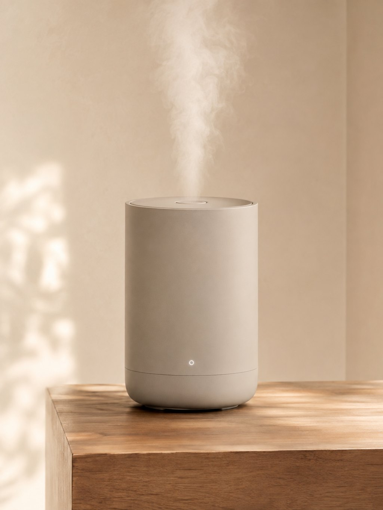
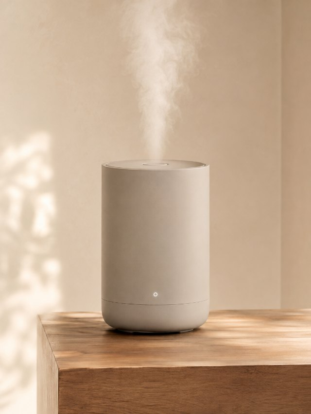
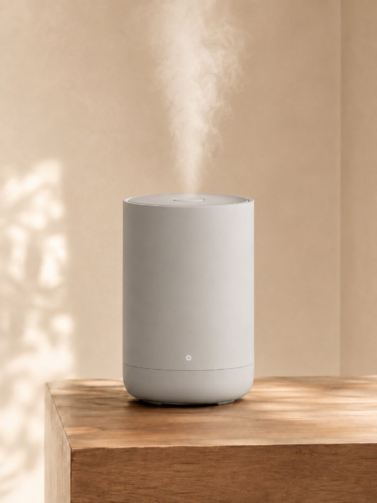
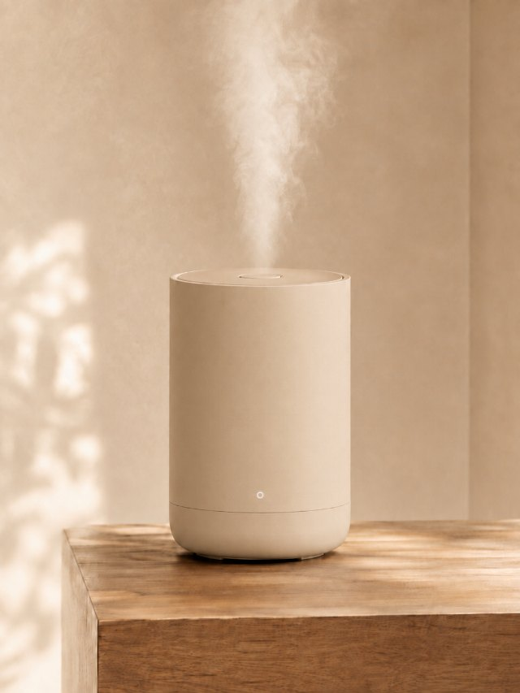
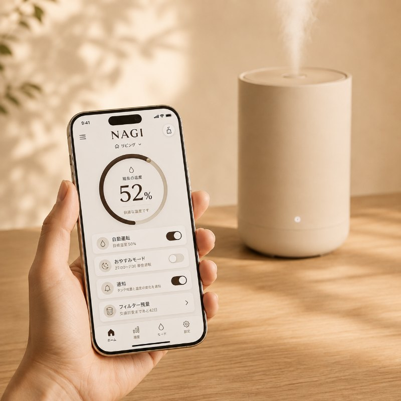
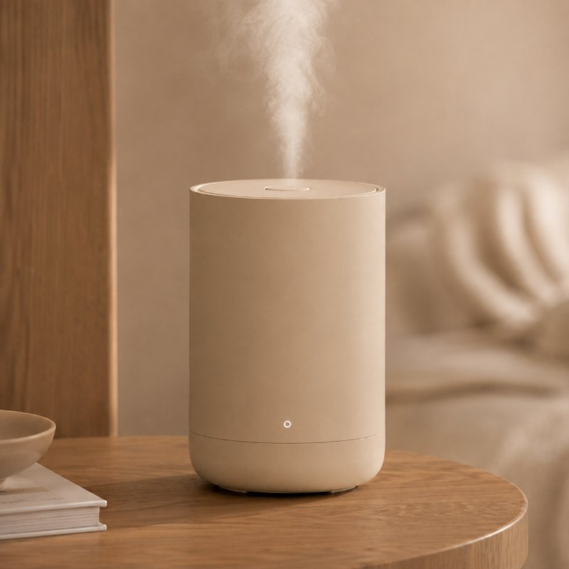
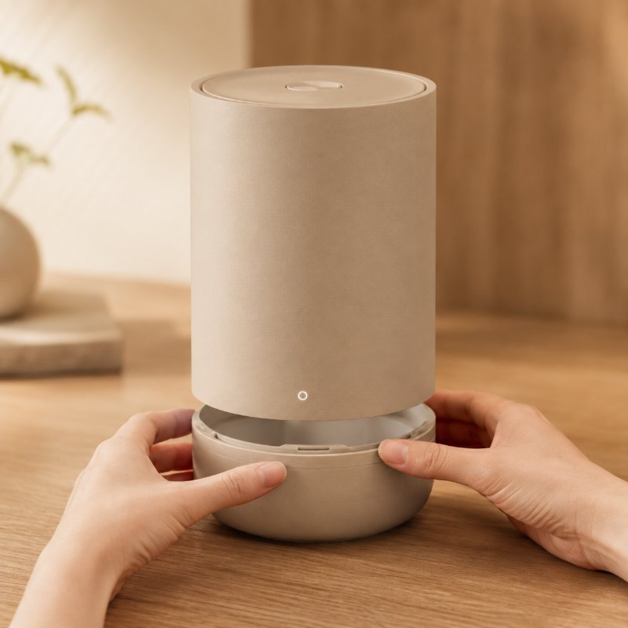
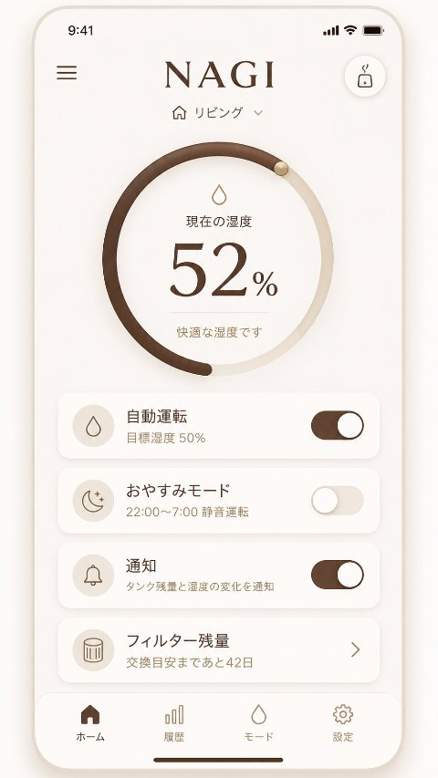
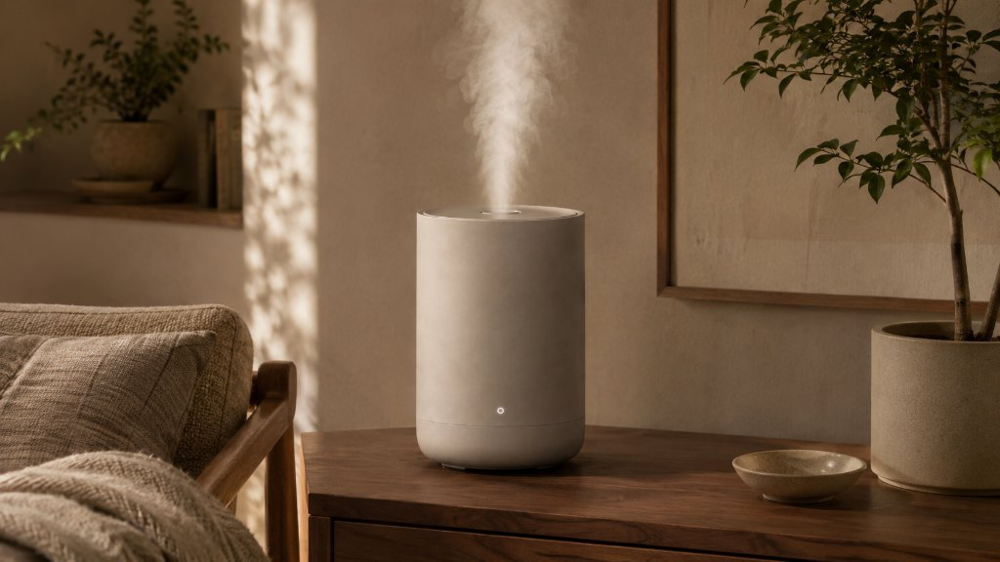
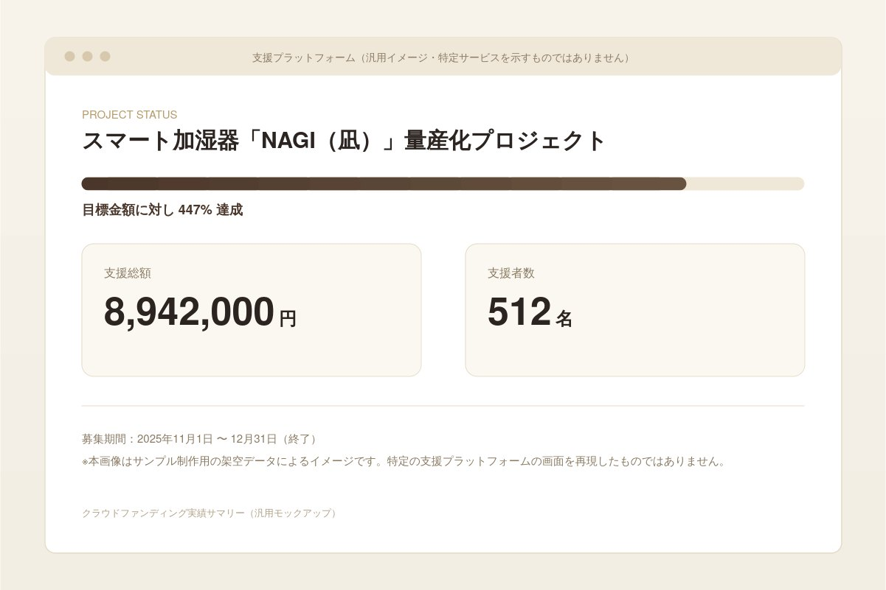

置いているだけで、
部屋が整う加湿器。
デザインも、湿度管理も、あきらめない。
NAGIは、見た目も使い勝手も妥協したくない人のための加湿器です。 スマホひとつで湿度を管理でき、静かに部屋に溶け込みます。
- 送料800円
- 30日間返品保証
- 1年間メーカー保証

こんな悩みはありませんか
加湿器を置きたいのに、置けない理由がある。
なんとなく、後回しにしていませんか。
空気が乾燥すると、喉や肌の調子が気になります。それでも加湿器を置かない人は多くいます。 理由は「部屋に生活感が出てしまう」「手入れが面倒で続かない」という2つです。
- 01 乾燥で喉や肌の調子を崩しやすい
- 02 加湿器のデザインが部屋に馴染まない
- 03 フィルター掃除が面倒で続かない
NAGIが解決すること
デザインも、湿度管理も、妥協しない。
両方を諦めなくていい理由があります。
NAGIは、インテリアに馴染むミニマルなデザインと、スマホで完結する湿度管理を両立させました。 見た目を選ぶか、使いやすさを選ぶか。その二択をなくすためにつくられています。
-

ディープグリーン
サンプル画像（実物と色味が異なります）
-

ミストグレー
サンプル画像
-

サンドベージュ
サンプル画像
全3色展開。掲載画像はサンプル制作用の仮素材のため、公開前に実物の商品写真へ差し替えます。
3つの特徴
暮らしに、静かに寄り添う3つの工夫。
毎日使うものだから、手間をかけさせません。
NAGIには、日々の使いやすさを支える3つの工夫があります。
-
01

スマホで遠隔・自動操作ができる
-
02

20dB以下の静かな運転音
（就寝時にも配慮）
-
03

工具を使わず分解して洗える抗菌タンク
12,800円（税込）＋送料800円
スマホひとつで、湿度管理を
湿度のことは、スマホに任せる。
外出先からも、操作できます。
専用アプリで、湿度や運転スケジュールを管理できます。 外出先から確認したり、帰宅に合わせて運転を開始したりすることも可能です。
- 現在の湿度をスマホで確認できる
- 運転スケジュールを設定できる
- 外出先からの操作にも対応

部屋に置いたときの佇まい
置いているだけで、部屋が整う。
在宅ワークのデスクにも、自然に馴染みます。
NAGIは、家電らしさを感じさせない佇まいを目指してつくりました。 デスクの上に置いても、インテリアの一部として馴染みます。

選ばれている理由
512名が、先に選んだ理由。
クラウドファンディングからはじまりました。
NAGIは、クラウドファンディングで512名の方に支援していただき、開発を進めてきました。 プロダクトデザイナーを中心としたチームが、「置いて美しい」という視点で設計しています。
- クラウドファンディング支援者
- 512名
- 支援総額
- 8,942,000円
出典：クラウドファンディング公式ページ

30日間の返品保証つき
よくある質問
気になることは、先にお答えします。
購入前に知っておきたいこと。
電気代の目安は？
標準運転で1時間あたり約0.3円です。
フィルター交換の頻度は？
目安として2〜3ヶ月に1回です（使用状況により変動）。
Wi-Fiがない環境でも使えますか？
手動での加湿機能は使用できますが、アプリ連携機能は利用できません。
どのくらいの広さの部屋に向いていますか？
目安は〜12畳です。15畳を超える部屋では、加湿力が不足する場合があります。
保証とスペック
安心して、試していただくために。
万が一のときも、サポートします。
NAGIには、購入後30日間の返品保証と、1年間のメーカー保証がついています。 水がなくなったときや満水になったときは自動で運転を止めるため、 つけっぱなしでも安心してお使いいただけます。
購入後30日間の返品保証
1年間のメーカー保証
満水・空焚きになると自動で止まる安全設計
スペック
| サイズ | W140 × D140 × H280 mm |
|---|---|
| 重量 | 約1.1kg（水を入れない状態） |
| タンク容量 | 2.5L（満水で約20時間連続運転） |
| 加湿方式 | 超音波式 |
| 適用畳数 | 〜12畳（15畳以上は加湿力が不足する場合があります） |
| 静音性 | 20dB以下（最小運転時） |
| 安全機能 | 満水検知・空焚き防止による自動停止 |
| 対応通信 | Wi-Fi 2.4GHz帯 |
| 対応アプリ | iOS 15以降／Android 11以降 |
| カラー | ミストグレー／ディープグリーン／サンドベージュ |
| 同梱物 | 本体、替えフィルター2個、電源アダプター、簡易説明書 |
今日から、部屋の空気を変える。
NAGIと、心地よい湿度を。
価格は12,800円（税込）、送料800円です。 30日間の返品保証もありますので、まずは試してみてください。
遷移先：自社ECサイト（Shopify）商品購入ページ
ご不明な点はこちらからお問い合わせくださいお問い合わせ
ご不明な点はこちらから
商品や配送についてのご質問にお答えします。 ご記入いただいたメールアドレス宛にご返信します。
お問い合わせを受け付けました。
ご記入のメールアドレス宛に受付完了メールをお送りしました。 担当者よりご返信しますので、届かない場合は迷惑メールフォルダをご確認ください。